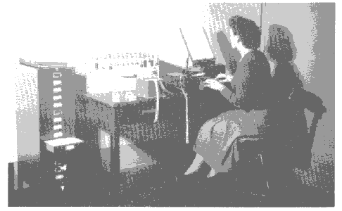
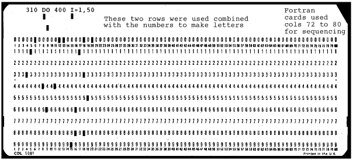

Delegates at the Conference: speakers are seated on the front row, left to right:
Delegates at the Conference: speakers are seated on the front row, left to right: Alwyn Jones, Janet Thornton, Frank Allen, Durward Cruickshank, Syd Hall, Eleanor Dodson, John Helliwell, Tom Blundell, Tony Crowther, Michael Woolfson
This meeting was held June 16 to 17th 1998 in the Department of Chemistry, University of Manchester in conjunction with celebrations in Manchester to mark the 50th Anniversary of the First stored-Program Computer, which was built at the University of Manchester under the leadership of the late Sir F.C. Williams. The first calculation, involving 3.5 million operations, was run successfully in June 1948 by Tom Kilburn, now Emeritus Professor of Computer Science. Ten Conferences took place in the University through the week of June 15th to 21st 1998, which was termed "Digital Week" by the City of Manchester. All ten Conferences shared the central extravaganza event held in the Bridgewater Hall in Manchester, which was called "The Golden Anniversary". (A 'Golden CD-ROM has been produced as a souvenir, details in the 'Editor' s Note at the end of this report)
For the Conference in the Chemistry Department a range of leading speakers from the UK and abroad enthusiastically addressed the topic 'Computers in Structural Chemistry and Molecular Biology' over the one and a half days of the conference. The meeting was supported by the British Biophysical Society, the British Crystallographic Association and the BBSRC Collaborative Computational Project for Protein Crystallography (CCP4). The financial assistance of Bruker, MSC and the IUCr, who each had advertising stands, was also gratefully acknowledged.
The 84 delegates from the UK, Europe and Australia were welcomed by
Professor John Helliwell in his opening remarks. He went on to make the
observation that recent years had seen the 100 year celebration of
Röntgen's discovery of X-rays, 100 years of the electron and the Bragg
Centenary celebration (the latter held in the Manchester Physics Department
in 1990), and now it was the turn of the computer for its 50 year
celebration!
Delegates at the Conference: speakers are seated on the front row, left to right:
Alwyn Jones, Janet Thornton, Frank Allen, Durward Cruickshank, Syd Hall,
Eleanor Dodson, John Helliwell, Tom Blundell, Tony Crowther, Michael
Woolfson
Emeritus Professor Durward Cruickshank, UMIST, spoke on "The Manchester Ferranti Mark I computer: a marvellous first tool for crystallographic calculations." Durward described the famous 'Williams tube'; this was the computer memory, a Cathode Ray Tube on which binary information was stored as 2560 spots or their absences. Durward's team made regular excursions from Cox's Department in Leeds starting in 1952 to undertake some of the earliest crystallographic computations. These included differential syntheses to study anisotropic vibrations and calculations for Dorothy Hodgkin on wet vitamin B12. Anecdotes of how to keep teleprinters going through long nights of calculations summoned up the correct pioneering images for the audience.
Professor Syd Hall, from the University of Western Australia spoke about "Coping with the structural chemistry information explosion." Syd entered into the full spirit of the event with computer lap top demonstrations of the power of the crystallographic information file (CIF), which he had pioneered. CIF provides a standard format for interchange of crystallographic data between applications, between authors and journals, and allows automatic data checking against standard dictionaries. Clearly this will be ever more vital to keep pace with rapid technical innovations in crystallography, the latest being laboratory-based CCD area detectors. The development of the 'smart' dictionary, containing procedures as well as raw data, will make manipulation of data explicit and customisable, and could reverse the trend towards the 'black-box' use of programs. Syd was the British Crystallographic Association Lecturer.
Dr Frank Allen, Cambridge Crystallographic Data
Centre, discussed "Crystallographic databases, data mining
and knowledge engineering in structural chemistry".
By
charting thousands of individual structures systematic trends can be
discerned, unexpected correlations are revealed or dynamic pathways can be
mapped. Database content can be converted into libraries of geometric
structures. A knowledge-based library of intermolecular interactions
(IsoStar) is now available and a library of conformational preferences is
under development. Both libraries can drive software solutions in
structural chemistry and molecular design, for example, predicting
protein-ligand docking modes, assisting in structure solution from powder
data, etc.
Professor Janet Thornton, University College London, spoke on "Computing and structural molecular biology: the universe of protein folds." The explosion of genome sequences is upon us, and the 3-D structures are growing in number too: a total of around 6000 protein 3-D X-ray structures exist in the Protein Data Bank (PDB). Janet presented analyses of the relationships between protein functions and protein folds. Using a CATHerine wheel format, the CATH protein structural classification for each functional family could be easily generated, so that at a glance the coloured area fractions showed up the distribution of folds for a particular function. The number of unique folds is certainly expected to be limited, and could guide which new protein structures to target first for 3-D structure determination.
Professor Sir Tom Blundell, University of Cambridge, closed the first day at the Chemistry Department with a lecture on "Protein structure, genomics and the analysis of function". Tom opened up with comments about his use of a third generation Ferranti computer in Oxford. He then explored, via a wealth of examples, how functional relationships between distant proteins could be revealed, with computations leading to new experiments. Thus, AIDS anti-virals followed from crystallographic studies on renin and the aspartic proteinases. The human pentraxins were shown to have a family relationship with lectins. Other studies he discussed in detail were insulin, and many others. The potential of these approaches in the context of genomes would be very powerful, and software written within his group, for example, for domain identification would allow targeting of new proteins with similar domains. In a genome, sequence analysis reveals that a large percentage of the proteins are of unknown function. Many mysteries clearly lie in store.
Eleanor Dodson of the University of York, this year's winner of the ACA Fankuchen award, spoke after the conference dinner on "The past, present and future of protein crystallographic computing". Eleanor described the early days in Dorothy's group and how communication by air mail was reserved for special stages of calculations! She led on to recommendations for much more automated and intelligent help tools for users of programme packages.
Emeritus Professor Michael Woolfson, University of York opened the second day's proceedings and spoke on "Direct methods computations: from small molecules to biological macromolecules." and took us through the various stages of development of direct methods, and glimpses of the use of the Cambridge EDSAC machine as well as the Manchester machine. He commented that this year was also the 50th anniversary of the seminal publication by Harker and Kasper of their inequality relationships in Acta Crystallographica (whose 50 year anniversary it is as well!). From these inequalities modern direct methods were born. Modern workstations now allow a million point Fourier Transform in a couple of seconds, and opened up such direct methods to calculations on proteins. The relative merits of anomalous scattering, direct methods and combinations of these methods were explored in the discussion.
Professor Alwyn Jones, Uppsala University, Sweden spoke on "The great strides made with molecular graphics." A career tour involving especially Munich and Uppsala, and other places on the way, with machine specs in Vax units and costs in Ferrari units, showed just how far computer price performance has improved. Beautifully illustrated slides of his electron density maps showed the audience the wide range of examples and cases met in Alwyn's many years' experience of this area. Alwyn was the BBSRC CCP4 Lecturer.
Dr Tony Crowther, MRC Cambridge expanded the range of the meeting yet further with a lecture on "Image reconstruction and computational techniques: Getting the best from electron micrographs of biological structures." Tony illustrated the power of computer methods for analysing images of individual particles with hepatitis B virus, the causative agent of a hugely important medical problem worldwide with 350 million carriers and 1 million deaths per annum. The structure of the 240 subunit core shell was determined by Bettina Boettcher to 7.4 Å from images of over 6000 individual particles, revealing the largely alpha-helical protein fold. This map provided a basis for Andrew Leslie and Samantha Wynne to solve the structure to 3.5 Å by X-ray crystallography.
Professor Axel Brunger, Yale University, USA was The British Biophysical Society Lecturer. Sadly, Axel's flight connections were broken by bad storms on the eastern seaboard of the US, so he had to send his apologies. His topic was to have been "Searching for the best structure: combining computer simulation, X-ray diffraction, and NMR.". His abstract had explained this was to be a full treatment of these complementary and powerful techniques, no doubt to cover the capabilities of his latest CNS program.
Professor John Helliwell closed the meeting by offering his
own personal comments on the computer revolution picking up on the great
change in disk space capability, taking us into the 'terabyte era' of
structural computing. This was hugely important, for example, for those
great structural data generators of today, synchrotron X-ray beamlines.
He highlighted this with examples from his laboratory of ultra-high
resolution, time-resolved and MAD protein crystal structure studies. Indeed
he outlined the prospect of genome level numbers of protein 3-D crystal
structure determinations by anomalous scattering and direct methods in the
future.
Prof J R Helliwell, Dr J Raftery, University of Manchester
Dr M Winn, CCP4, Daresbury Laboratory.
Editor's Notes:
1. The celebrations included a special exhibition in the Manchester Museum
and the manufacture of a replica of the 1st stored program computer, known
as 'The Baby', with a ceremonial running of the 1st program. The replica
'Baby' will be kept on display in Manchester, at the
Museum of Science and Technology.
2. A CD-ROM 'The Computer that Changed the World' has been produced as
an educational text for schools, a reference work for libraries and a
souvenir of the 50th Anniversary celebrations. It has many pictures,
descriptions of early computers, especially those in Manchester between 1946
and 1974. Details of all the celebrations can be found on the Web at
http://www.computer50.org
, including the mechanism of the
Williams storage tube memory, and how to order the CD-ROM, which runs only
on high power PCs.
3. If you are interested in old computers you will be fascinated by the Virtual Museum of Computing ( at URL http://www.museums.reading.ac.uk/vmoc/ ) which is a completely virtual collection of exhibits on the history of computers, etc.
4. If you prefer to see real old computers (gathering real dust not virtual
) you may like to visit Bletchley, where the Bletchley Park Trust is setting
up a Museum for Second World War memorabilia and technological exhibits such
as old wireless equipment and the Computer Conservation Society's collection
of old computers, including an Elliot 803 which it hopes to get running
again. They are replicating, Colossus, the first electronic
computer which ran a fixed program Colossus was kept secret for over 30
years because it was used during the Second World War to help decode
wireless messages encrypted by the Enigma machine. All the workers conformed
so well to the Official Secrets Act that details of Colossus only came to
light in about 1980 when they were released by the UK Government.
Bletchley Park is easily reached by train since it is only a few hundred
yards from the railway station. Opening hours vary, most weekends during the
summer, details by telephone +44 (0)1908 640 404 or either of 2 Websites
at:
http://www.cranfield.ac.uk/ccc/bpark/
or the Bletchley Park Trust's own at
http://chide.museum.org.uk/bletchley.park.trust/bletchley.park.trust.index.html
5. If you are more interested in buildings associated with computing people,
you can visit Maida Vale, North West London, where English Heritage recently
unveiled a plaque on Alan Turing's birthplace. Alan Hodges, Turing's
biographer, maintains a web site with details of his life and work on
computable numbers at
http://www.turing.org.uk/turing/

Some early computers could only read a program into memory if it was on a
single pieceof paper tape. The operator above is copying a program tape to a
new one and copying any utility routies it needs on the end of the new tape.
The master copies of the utility routines were kept in small filing cabinets
like the one on the left.

American computers tended to use punched card storage, again conducting
fingers poked through the holes to make a contact so that the circuit could
detect which holes had been punched. Cards were easier to edit than paper
tape, but had to be sequenced (in cols 72-80) if you were going to be able
to get them in the right order after accidentally dropping them.
I asked Durward Cruickshank, for a copy of his notes and references so that I could give a few more details of early computing for historians of crystallographic computing..
The page opposite shows some types of storage media used to feed the programs into the computer memory.
Durward began by explaining that crystallographers were very well placed to make good use of computers because they had already developed ways of breaking down the calculations into parts, using Fourier transforms and analogue devices such as the Beevers-Lipson strips.
He gave a list of early references to the use of Fourier Transforms, in one dimension
He also gave a list of references to the use of computers for crystallographic calculations.
Computer Authors References
EDSAC Bennett & Kendrew Acta Cryst (1952) 5, 109
MUEC Ahmed and Cruickshank Acta Cryst (1958) 6, 765
MUEC Fowweather Acta Cryst (1955) 8, 633
SWAC Sparks, Prosen. Kruse, Trueblood Acta Cryst (1956) 9, 350
FERUT Ahmed & Barnes Acta Cryst (1958) 11, 669
Conference on Biological Structures and Computational Methods XRAG London
Nov 1956 British Journal of Applied Physics (1958)
9,1
Conference on Computing methods in X-Ray Crystal Analysis, Glasgow, August 1960
editors Pepinsky, Robertson and Speakman publisher Pergammon (1961)
In June 1998 a series of meetings in Manchester commemorated the 50th anniversary of the invention in that city of the stored-program computer. One meeting, organized by John Helliwell, reviewed the impact of computers in crystallography. As it turns out 1998 is the 50th anniversary of two other important developments in crystallography - the birth of Acta Crystallographica and the origin of direct methods.
The first paper on direct methods was by D. Harker & J.S. Kasper (Acta Cryst., 1948, 1, 70) which showed that for very simple centrosymmetric structures inequality relationships could unambiguously indicate the signs of some strong structure factors. An important extension of this general principle, which applied to larger structures, was that probable signs could be found from sign relationships. This idea was presented in three papers which appeared together. The first by D. Sayre (Acta Cryst., 1952, 5, 60) introduced an exact equation between structure factors for equal-atom structures, generally known as the Sayre equation. The second by W. Cochran (Acta Cryst. 1952, 5, 65) derived the sign relationship from a mathematical expression of the physical condition that electron density is concentrated around atomic centres. The third by W.H. Zachariasen (Acta Cryst., 1952, 5, 68) was theoretically unsound but introduced the idea of representing unknown phases by symbols and showed how this could be used to solve a simple previously-unknown structure.
More important progress was made in 1955 and 1956. The first computer program, for the Cambridge machine (Electronic Delay Storage Automatic Calculator), EDSAC, was written to apply sign relationships and it was shown that the known structure salicylic acid could be solved in projection (W. Cochran & A.S. Douglas, Proc. Ray. Sac., 1955, A227, 486). Features of the program were the representation of signs by symbols, the generation of a number of possible sets of signs and the recognition of the correct set by a figure-of-merit test. In another development Cochran introduced the three-phase relationship (Acta Cryst., 1955, 8, 473) which extended the application of direct methods to non-centrosymmetric structures. The probability density of the sum of the phases of three large structure factors, with a null sum of indices, was shown to be concentrated around zero (modulo 2p ). Once a base of phase information was available a process of phase extension was available since if two phases in a relationship were known then the value of the third could be estimated. Finally, in 1956 J. Karle and H. Hauptman (Acta Cryst., 1956, 9, 635) introduced the tangent formula, a powerful tool for phase extension and refinement that was to play a central role in much that followed.
Although all the ingredients were now in place for solving structures by
direct methods there was a lull of several years - with some progress but
none of it very critical. Then
J. Karle & I.L. Karle
(Acta Cryst., 1963, 16, 969) introduced the
symbolic addition method, a systematic approach to using symbols
which they later applied to the solution of a non-centrosymmetric structure
(Acta Cryst., 1964, 17, 835). This demonstration
that direct methods could be applied to non-centrosymmetric structures
opened the floodgates to new powerful developments. G.Germain &
M.M.Woolfson wrote the first fully-automatic program, LSAM, based on
symbols, to solve centrosymmetric structures (Acta Cryst. 1968,
B24, 91 ) in which the input was the basic observed data
and the output an image of the structure. In the same paper the concept of
MULTAN was described, an automatic multi-solution method for solving
non-centrosymmetric structures. This method was developed and described in a
series of papers over the next few years and by the late 1970's the widely
distributed, user-friendly MULTAN program was responsible for the
solution of almost two-thirds of reported structures. Many other automatic
program systems and new concepts were produced. SHELX (G.M. Sheldrick, 1975,
SHELX. Program for Crystal Structure Determination. University of
Cambridge) was similar to MULTAN but with some novel features. RANTAN (J-X
Yao,Acta Cryst., 1981, A37, 642) initially
allocated completely random phases to all reflections to be phased so that
phase refinement occurred without phase extension. SIMPEL (H. Schenk &
C.T. Kiers, 1984, in Methods and Applications in Crystallographic
Computing. Eds. S.R. Hall and T. Ashida,, Clarendon Press, Oxford) was
an automated symbolic addition procedure for non-centrosymmetric structures.
SAYTAN (T. Debaerdemaeker, C. Tate & M.M. Woolfson, Acta Cryst.,
1985, A44, 353) replaced the tangent formula by a more
complicated phasing formula so giving phases that satisfied Sayre's
equation. XMY (T. Debaerdemaeker & M.M. Woolfson, Acta Cryst.,
1989, A45, 349) used parameter-shift refinement to
optimize a target function based on Sayre's equation. In 1990 G.M. Sheldrick
(Acta Cryst. A46, 467) and T.N. Bhat (Acta
Cryst. A46, 735) introduced the idea of simulated
annealing to refine phases, borrowing ideas from liquid theorists who
numerically studied systems in thermodynamic equilibrium. With this armoury
of direct methods available it could be claimed by the end of the 1980's
that for smaller crystal structures, with up to 100 or so non-hydrogen atoms
in the asymmetric unit, the problem of structure solution was essentially
solved.
While these developments were happening in direct methods there was spectacular progress in protein crystallography which was at the forefront of the new biotechnology revolution. Those working in the direct methods field began to set their sights on the solution of protein structures and eventually M.M. Woolfson and J-X Yao (Acta Cryst., 1990, A46, 409) showed that a small known protein, Avian Pancreatic Polypeptide (App) with 36 amino acids plus zinc and some ordered water, was amenable to solution by SAYTAN. Sheldrick showed that this structure could also be solved by his simulated annealing process. M. Mukherjee and M.M. Woolfson ( Acta Cryst., 1993, D49, 9; Acta Cryst., D51, 626) demonstrated that MULTAN could solve a larger protein, 2-Zn insulin, with over 800 non-hydrogen atoms in the asymmetric unit, and that useful phases could also be found for this structure with lower resolution data, down to about 2.25Å.
A new contribution to protein solution, the SHAKE and BAKE method, was
introduced by the Buffalo group (C.M. Weeks, G.T. DeTitta, R. Miler & H.
Hauptman, Acta Cryst.,1993, D49, 1 79). This
involved phase refinement, either by the tangent formula or by parameter
shift optimization of a target function, alternating with real-space
filtering by selecting large peaks from a Fourier map. This has been shown
to be able to solve protein structures with several hundred atoms by
perfectly objective procedures.
Most of the demonstrations of
structure solution for larger proteins have been for structures containing
heavy atoms. Recently M.Mukherjee and M.M. Woolfson (Acta Cryst. in
press) have shown that RNApl, a 96 amino-acid protein containing five
sulphur atoms, can be solved quite automatically from data to
finally-refined structure at 1.17Å without any intervention. If this
process is generally applicable and not just a flash-in-the-pan, which is
still to be demonstrated, then it offers the prospect of doing for
small-to-moderate size proteins what has already been achieved for larger
non-protein structures.
Michael Woolfson
University of York
There is considerable interest among structural scientists at the moment in the future impact of area-detector diffractometers and fast computers. These advances pose a number of concerns: will these devices flood us with data and structures; how will labs archive all of this data, and how will journals absorb the surge of new structures? This talk explored the nature of the data crisis, and what role data languages, such as CIF, would play in handling future data growth, and turning these into a benefit rather than a burden.
Seeing into the future is never easy, but one prediction is obvious.. computers will continue to evolve and expand rapidly in performance. In the next two years workstations with 100 gigabyte disks will be available, and terabyte disks within the decade... gigabyte RAM memories will become standard... and Internet links will operate at gigabyte bandwidths. Despite such dramatic improvements in technical support, scientific data is unlikely to grow rapidly. Depositions to databases, such as the CCDC and PDB (currently at 1200 and 160 per month, respectively), will continue to accelerate... but at a lesser rate.
The reason for this is also obvious. Although computer and instrument capacities have improved a thousand-fold in the past decade, that of the unaided human remains constant! The production of scientific knowledge is critically dependent on human capacity. We are all well aware of our own limitations so it makes sense in these hectic times to ask computers to do more smart tasks so that we can concentrate on more important stuff. Universal data languages, such as CIF, are essential if we want computers to do clever things. A fundamental requirement is that data be presented in a flexible, self- descriptive and computer-parsible way. Then data dictionaries can be used to specify the relationships between data and provide automatic methods for the evaluation of data based on these relationships.
In crystallography existing CIF dictionaries already provide much of this information for core, macromolecular and powder items and these are actively used by journals for data validation. Considerable software is available for manipulating CIF's and for developing local applications. Syd demonstrated how to access the CIFs at the Acta C web site and display published structures on the screen using local software. A similar approach works for viewing macromolecular structures from the PDB using, say, RASMOL,( the PD protein viewing program available on many platforms,) called from a web browser on a PC.
Details of the CIF web link are at http://www.crystal.uwa.edu.au/Crystal/Software/Ciffilter/ where you will see the latest details what needs to be done to install it.
The data languages such as CIF, and their associated dictionaries, open up all sorts of new and intelligent ways to handle data. The use of a tool like cif2pdb to direct data to RASMOL is a simple but useful example of the sorts of general applications that are possible with this approach.
This sort of portability and versatility is essential for application to
more complicated data handling tasks. Languages such as CIF provide
opportunities for moving the knowledge of data relationships out of computer
programs into dictionaries, so that they can be used as electronic text
books, or as interactive algorithms for software applications. This
prediction will cause some programmers to grimace, as clearly such an
approach would be slow on today's computers, but interpretive processes are
likely to be widely used in the future. Just think of the algorithmic
transparency compared to the current software black boxes!
 Click here to return to BCA homepage
Click here to return to BCA homepage